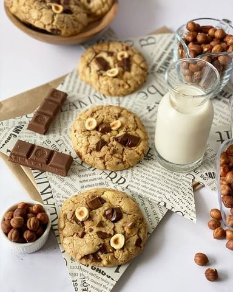

Cookies sa dve vrste čokolade i lešnicima

Moja beleška
SačuvanoOno što ove cookies razlikuje od ostalih koje ste isprobali sa mog profila je braon puter. Do sada sam nekako najčešće 🍪 pripremala sa omekšalim ili tek istopljenim puterom ovog puta sam želela da vidim razliku u ukusu i teksturi kada se pripremaju sa braon puterom. I da vam kažem, deluje mi kao da se kuća najviše razmirisala ☺️🥰 Naravno, i više su nego lagani za pripremu, a verujem da će vas oduševiti. Da ne dužim,
Sastojci
- Sastojci
Priprema
Tajna pripreme braon putera je da se stavi u manju serpicu, na laganoj vatri topi, pa po pojavi mehurića meša dok ne dobije lepu braonkastu notu i ne razmiriše kuću. On nekako daje orašast ukus i zato sjajno ide uz dodatak lešnika. 👌🏼 Iz serpice ga po završetku prespite u neku posudicu kako bi se brže ohladio, a onda dodajte šećere, mešajte žicom, potom aromu vanile, pa jaje, opet povežite žicom. Tome dodajete suve sastojke ( brašno, prašak za pecivo, sodu i mrvicu soli), sjedinite. Najsladje za kraj -krupnije seckana čokolada, crna i mlečna i lešnik, povežete, formirate 12 kuglica i ostavite ih u zamrzivač na 5-10 min, samo dok se rerna ugreje. Pecite ih 15ak minuta na 180C, pa na sveže možete dodati još koju kockicu čokolade ili izlomljeni lešnik 🌰Mene toliko podsećaju na one prave američke koje sam pre nekoliko godina gledala u vitrinama njihovih restorana, a ukusom su još bolji, ova homemade verzija je dobitna! 🥰🥰🥰 Neka vam kiša ne pokvari raspoloženje, već ugreje rerne i razmiriše kuću ❤️
Originalni opis sa Instagrama
Cookies sa dve vrste čokolade i lešnicima 🍪😋 Ono što ove cookies razlikuje od ostalih koje ste isprobali sa mog profila je braon puter. Do sada sam nekako najčešće 🍪 pripremala sa omekšalim ili tek istopljenim puterom ovog puta sam želela da vidim razliku u ukusu i teksturi kada se pripremaju sa braon puterom. I da vam kažem, deluje mi kao da se kuća najviše razmirisala ☺️🥰 Naravno, i više su nego lagani za pripremu, a verujem da će vas oduševiti. Da ne dužim, Sastojci: •125 gr braon putera •100 gr braon šećera •50 gr belog šećera •1 jaje •2 kašičice arome vanile •225 gr brašna •1/2 kašičice soli •1/2 kašičice praška za pecivo •1/2 kašičice sode bikarbone •150 gr crne, iseckane čokolade •100 gr mlečne, iseckane čokolade •60 gr krupnije seckanih lešnika @ukusiprirode.rs Tajna pripreme braon putera je da se stavi u manju serpicu, na laganoj vatri topi, pa po pojavi mehurića meša dok ne dobije lepu braonkastu notu i ne razmiriše kuću. On nekako daje orašast ukus i zato sjajno ide uz dodatak lešnika. 👌🏼 Iz serpice ga po završetku prespite u neku posudicu kako bi se brže ohladio, a onda dodajte šećere, mešajte žicom, potom aromu vanile, pa jaje, opet povežite žicom. Tome dodajete suve sastojke ( brašno, prašak za pecivo, sodu i mrvicu soli), sjedinite. Najsladje za kraj -krupnije seckana čokolada, crna i mlečna i lešnik, povežete, formirate 12 kuglica i ostavite ih u zamrzivač na 5-10 min, samo dok se rerna ugreje. Pecite ih 15ak minuta na 180C, pa na sveže možete dodati još koju kockicu čokolade ili izlomljeni lešnik 🌰Mene toliko podsećaju na one prave američke koje sam pre nekoliko godina gledala u vitrinama njihovih restorana, a ukusom su još bolji, ova homemade verzija je dobitna! 🥰🥰🥰 Neka vam kiša ne pokvari raspoloženje, već ugreje rerne i razmiriše kuću ❤️ • • • #cookies #chocolatechipcookies #cookiesofinstagram #hazelnutcookies #cookiesandmilk #cookielove #cookielover #cookierecipe #sweets #desserttime #kukiz #kolacici #keksici #keksicisacokoladom #lesnik #lešnikkeksići #idejezadezert #zadovoljnahr #slatkisi #recepti #slatkirecepti